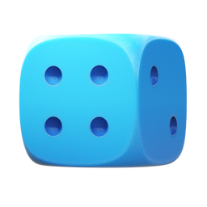
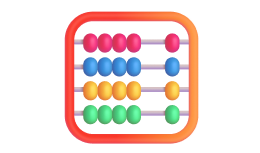
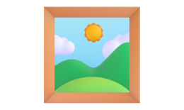

Точный и бесплатный тест уровня интеллекта

Ответьте на несколько вопросов и узнайте ваш IQ прямо сейчас!
Пройти тест
Что такое IQ-тест?
-
IQ или Коэффициент интеллекта (англ. intelligence quotient), или коэффициент умственного развития — это показатель интеллекта человека, который можно измерить с помощью специальных психологических тестов.
-
 Тесты IQ разрабатываются так, чтобы результаты можно было описать с помощью шкалы нормального распределения.Средним IQ считается показатель 100, с отклонением плюс-минус 15. Это значит, что если измерить IQ у большой группы людей, большинство наберут от 85 до 115 баллов.
Тесты IQ разрабатываются так, чтобы результаты можно было описать с помощью шкалы нормального распределения.Средним IQ считается показатель 100, с отклонением плюс-минус 15. Это значит, что если измерить IQ у большой группы людей, большинство наберут от 85 до 115 баллов. -
 Учёными была установлена связь IQ c различными показателями в жизни. Самая значительная кореляция была обнаружена между результатами теста IQ и успеваемостью в школе.Высокие баллы IQ прогнозируют больший успех на рабочем месте, более высокий доход, лучшее физическое и психическое здоровье. И даже долгую жизнь.
Учёными была установлена связь IQ c различными показателями в жизни. Самая значительная кореляция была обнаружена между результатами теста IQ и успеваемостью в школе.Высокие баллы IQ прогнозируют больший успех на рабочем месте, более высокий доход, лучшее физическое и психическое здоровье. И даже долгую жизнь. -

Исследователи этого вопроса признаются, что кроме IQ на успешность человека влияет множетсво факторов, например таких как коммуникабельность, трудолюбие и удача.Не полагайтесь только на тесты.
Тесты
-
Тест Равена
Самый наглядный тест на интеллект
25 минут
-
Тест для детей
От семи до шестнадцати лет
40 минут
-
Тест Айзенка
Самый популярный тест на интеллект
30 минут
-
Тест Амтхауэра
Самый точный тест на интеллект
40 минут
Частые вопросы
-
Как подготовиться к тесту

-
Какой тест выбрать?
-
Как развить интеллект?
-
Создайте для себя максимально комфортные условия. Подберите удобный стул, обувь и освещение. Приготовьте бутылку с водой, чтобы не отвлекаться в процессе.
-
Мозг работает гораздо лучше после полноценного 8-ми часового сна и при правильном питании. Не голодайте и не переедайте перед тестом.
-

Если вы чувствуете волнение — попробуйте применить психологические техники: медленное глубокое дыхание, визуализацию.
-
Помните: это просто тест, созданный людьми со своими взглядами на вопрос интеллекта. Он не может описать всю многогранность вашей личности.
-

Каждый из приведённых на сайте тестов отражает одну из точек зрения на проблему измерения интеллекта.
-
Некоторые из тестов включают в себя многоступенчатые субтесты для всесторонней проверки. Другие — просты и визуально наглядны.
-
Каждый тест содержит подробное описание и справку. Изучите их, прежде чем приступить к прохождению.
-
Для всех новичков мы советуем начать с теста Равена и при желании выбрать любой следующий тест. Объективный результат можно получить последовательно пройдя несколько тестов разной направленности.
-
Тренируйте память. От того насколько хорошо вы способны запоминать, зависит множество интеллектуальных процессов. Отлично подойдёт заучивание стихов, песен или монолгов.
-

Решайте математические задачи. Для этого можно купить или скачать специальные задачники. Лёгкие задачи лучше решать в уме, а более сложные - на листе бумаги.
-

Читайте и пишите сами. Одна из важных составляющих IQ - вербальный интеллект. полезным будет ведение дневников, блогов или написание сочинений на заданную тему.
-

Тут обязательно появится текст, когда мы его сочиним!
Частые вопросы
-
0-50Умственная отсталостьЛюди с тяжелой формой умственной отсталости не поддаются обучению и воспитанию, имеют уровень интеллектуального развития до 20 баллов. Они находятся под опекой других людей, так как не могут о себе позаботиться, и живут в собственном мире.
Около 2 % людей на Земле имеют уровень интеллектуального развития от 21 до 50 баллов, они страдают слабоумием, средней степенью умственной отсталости. Такие люди не могут обучаться, однако способны позаботится о себе, но чаще всего имеют опекунов. -
51-80Низкий уровень интеллектаОколо 7% людей имеют легкую форму умственной отсталости и уровень IQ от 51 до 70. Они обучаются в специальных заведениях, однако способны позаботится о себе сами, и являются относительно полноценными членами общества.
Еще одна десятая часть населения имеет уровень IQ от 71 до 80, это уже признак умственной отсталости меньшей степени. Люди с таким результатом в основном посещают специальные школы, но могут закончить и обычную начальную школу со средними отметками. -
81-100Уровень интеллекта ниже среднегоДесятая часть населения обладает уровнем интеллекта ниже среднего. Их результаты прохождения теста на IQ составляют от 81 до 90. Эти люди обычно нормально учатся в школе, однако чаще всего не получают высшего образования. Работать они могут в сфере физического труда, в отраслях, не требующих применения интеллектуальных способностей.
Если вы прошли тест, а результат оказался менее 100 баллов, не стоит расстраиваться, ведь этот средний показатель у четверти населения. Люди с такими показателями интеллекта хорошо учатся в школе и ВУЗах, они устраиваются на работу в сфере менеджмента среднего звена и других специальностей. -
100-120Средний уровень интеллектаЕсли вы думаете, что средний уровень iq составляет примерно 110 баллов, то вы ошибаетесь. Этот показатель относится к интеллекту выше среднего. Люди с результатами тестов от 111 до 120 обычно трудолюбивы и тянутся к знаниям всю свою жизнь.
У четверти населения показатели интеллекта составляют от 101 до 110 – это средний уровень IQ, позволяющий добиться определенных высот. Кстати, интеллект поддается развитию, подобно тому, как мышечную массу можно накачать, точно также можно заниматься и фитнессом для мозга. -
121-150Высокий уровень интеллектаИнтеллектуальный уровень выше среднего показывает всего 6 % населения. Таких людей видно в ВУЗах, так как они являются обычно отличниками по всем дисциплинам, успешно заканчивают университеты, реализуют себя в разнообразных профессиях и достигают высоких результатов. Люди с показателями IQ свыше 140 – это обладатели отличных творческих способностей, которые достигли успехов в разных научных отраслях. Среди известных личностей с результатом теста интеллектуальных способностей от 140 – Билл Гейтс и Стивен Хоукинг.